Compiling with texPreview
Unequal blocks
x3 <- x2/x2
x2 + x3
#> $\alpha$&aaa&bbb&$\alpha$&aaa&bbb\\
#> $\alpha$&aaa&bbb&$\alpha$&aaa&bbb\\
#> &&&$\alpha$&aaa&bbb\\
#> &&&$\alpha$&aaa&bbb\\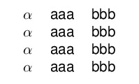
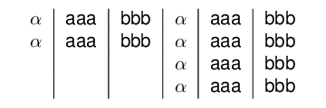
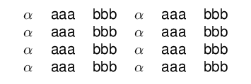
title <- c('param',sprintf('col%s',1:5))%>%
purrr::map(as.tb)%>%
purrr::reduce(`+`)
title / (x2 + x3)%>%
tabular(align = '|c|ccccc|')%>%
texPreview::texPreview(stem = "tb8")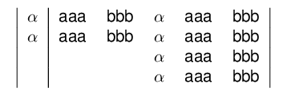
Reducing vectors
(Not sure if this needs to be wrapped into a single function instead of having users apply reduce)
purrr::reduce(k1,`+`)
#> 1&2&3
k <- purrr::reduce(k1,`+`) / purrr::reduce(k2,`+`)
k
#> 1&2&3\\
#> 4&5&6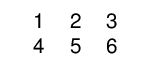
as.tb
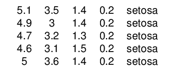
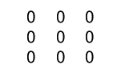
#sparse matrix
Matrix::bdiag(Matrix::Diagonal(2), matrix(1:3, 3,4), diag(3:2))%>%
as.tb()%>%tabular()%>%
texPreview(stem='tb18')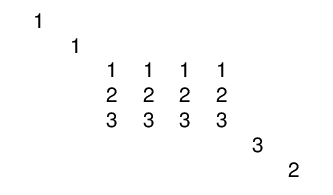
hline
Add hlines into the table using hline.
hline expects the lines to add hline to, where 0 is a possible value for lines which a line will be added to the top of the table. When lines are left empty then all the lines will have hline attached to them.
title / (x2 + x3)%>%
hline()%>%
tabular(align = '|c|ccccc|')%>%
texPreview::texPreview(stem = "tb9")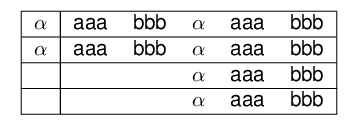
title / (x2 + x3)%>%
hline(lines = c(2,3))%>%
tabular(align = '|c|ccccc|')%>%
texPreview::texPreview(stem = "tb10")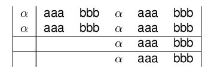
cline
Add clines into the table using hline.
Define where to put in the clines with a spec object. The spec can be either a list or data.frame either of which containing the elements line,i,j, where line is the line to apply the cline, i,j is the starting end ending columns respectivley.
cline expects the lines to add hline to, where 0 is a possible value for lines which a line will be added to the top of the table.
l <- list(c(line=1,i=2,j=3),c(line=2,i=1,j=2),c(line=3,i=2,j=3))
d <- data.frame(line=1:3,i=c(1,2,3),j=c(1,2,3))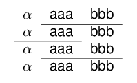
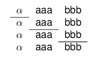
you can also combine hline and cline in a pipe
purrr::reduce(rep(x1,4),`/`)%>%
hline(c(0,4))%>%
cline(d)%>%
tabular()%>%
texPreview::texPreview(stem = "tb13")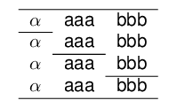
Multicol/Multirow
title <- as.tb('param') + multicol('vals',3,'c|')
tab <- title / (multirow('$\\beta$',2) + k)
tab%>%
tabular(align = '|cccc|')%>%
texPreview::texPreview(stem='tb14')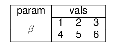
Putting it all Together
tab%>%
hline(c(0,3))%>%
cline(data.frame(line=1,i=2,j=4))%>%
tabular(align = '|c|ccc|')%>%
texPreview::texPreview(stem='tb14')
title <- as.tb('param') + multicol('vals',3,'c')
tab <- purrr::map(1:4,function(x) multirow(sprintf('$\\beta_%s$',x),2) +k )
(title / purrr::reduce(tab,`/`))%>%
tabular()%>%
texPreview::texPreview(stem='tb15')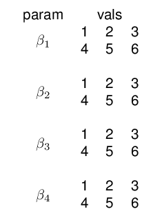
Design/Specs
Building blocks for TeX tables
Idea
Assemble LaTeX tabular environments using simple operations.
This would enable us to create any table layout with a consistent user API.
Defining a new class of R element tabular that is the basic structure of the language.
Proposed Syntax
Defining a new class of R element tb that is the basic structure of the language.
Joining elements
Let t1 and t2 be two objects of class tb.
t1 + t2 |
⬛ ⬛ |
| ⬛ | |
t1 / t2 |
|
| ⬛ |
Using this language creating a table can be broken down to cell level
t1 =(⬛+⬛+⬛) / (⬛+⬛+⬛)
would be translated to
1 & 2 & 3 \\
4 & 5 & 6making their combination a natural extension
t1 + t1
would translate to
1 & 2 & 3 & 1 & 2 & 3 \\
4 & 5 & 6 & 1 & 2 & 3